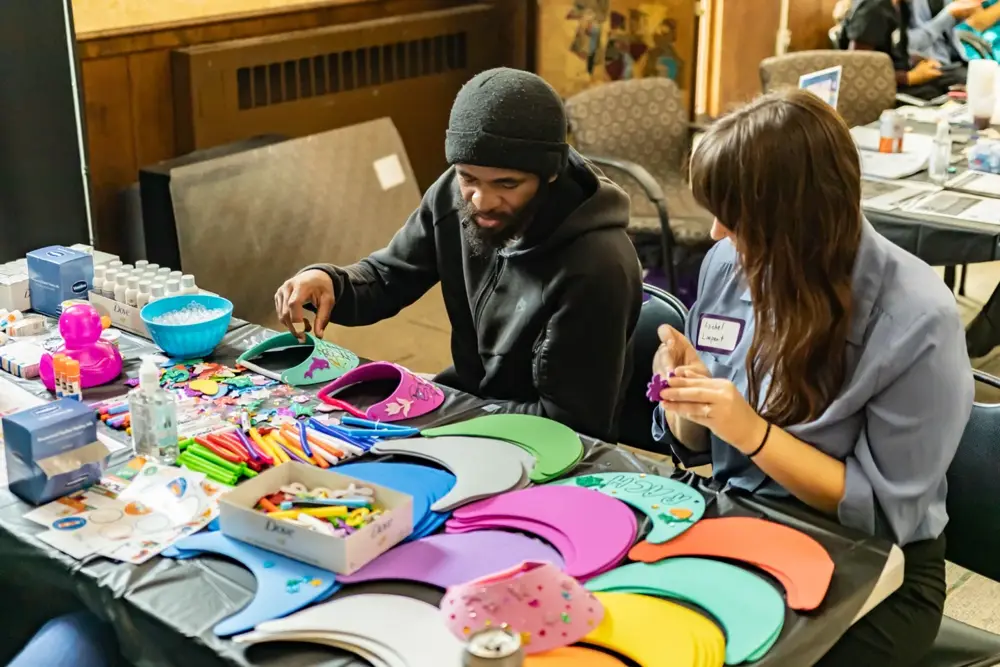

Nāda / MOGA
Listening, mantra, music, voice, movement, and contemplative sound practice.

Artwork: Historical Ragamala painting, via Wikimedia Commons. Historical art is used as an interpretive visual, not a claim of direct lineage.
Nāda Yoga / MOGA explores mantra, voice, rhythm, music, deep listening, movement, story, and shared expression without collapsing their distinct histories into one practice.
Explore current Nāda practice →Co-created by student David Samael and founder Luan Seguim-Arnold
An original science-fiction and fantasy role-playing concept exploring conscious choice, dream mastery, psychological resilience, ethical discernment, and the relationship between inner experience and waking life.


Characters, interface elements, mechanics, and visual designs are developmental and may change as the project grows.
Listening, mantra, music, voice, movement, and contemplative sound practice.

Developing collaborations that use performance and embodied creativity as community learning.

Photography, mural concepts, illustration, and visual documentation that help the school remember and communicate its work.
Begin with what draws you here. Students, volunteers, creators, and partners each help the school grow through participation and shared responsibility.
Discover Nāda / MOGA and the creative projects already taking shape within the school.
Explore sound practice →Share your interest in photography, visual storytelling, music, performance, or project support.
Share your interests →Explore a creative contribution or partnership with a clear shared scope.
Connect with the school →Current opportunities depend on the project, preparation, and available supervision. Community volunteering begins with the school’s interest form; apprenticeship fieldwork follows an individually approved placement.
The school grows through shared stories, images, sound, and the people willing to create together. This photograph of hands-on engagement at the Neighborhood House health fair offers a glimpse of community participation; the arts pathways below continue to develop through specific projects and collaborations.